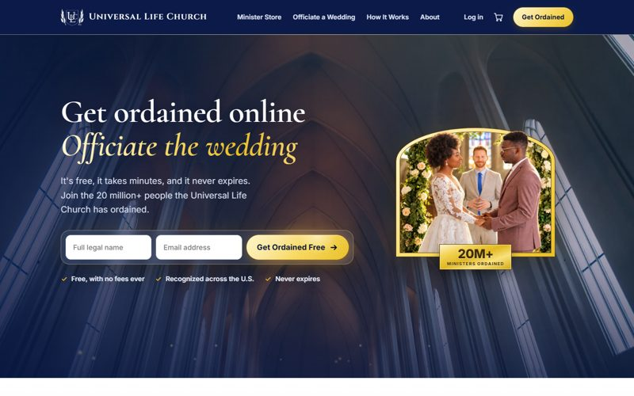
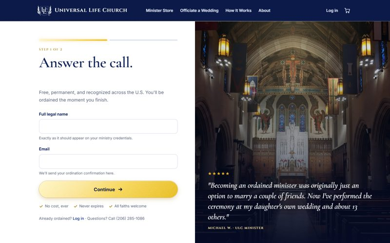
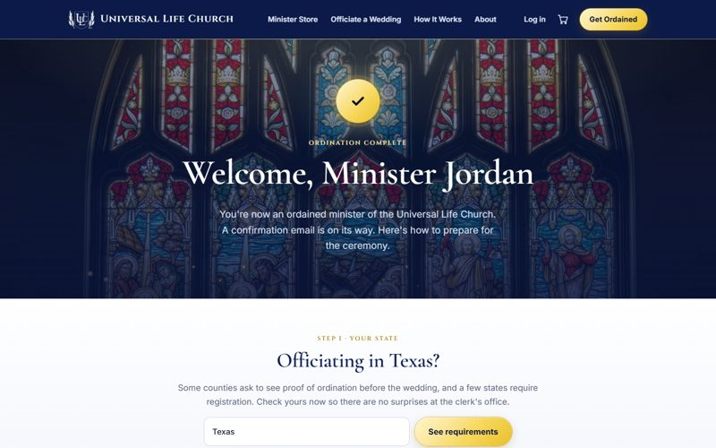
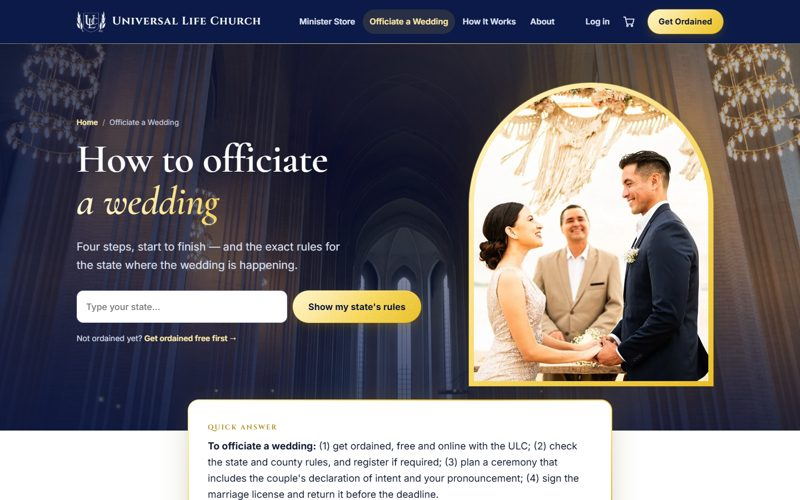
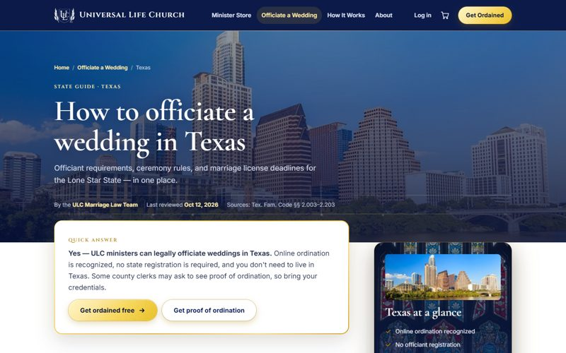
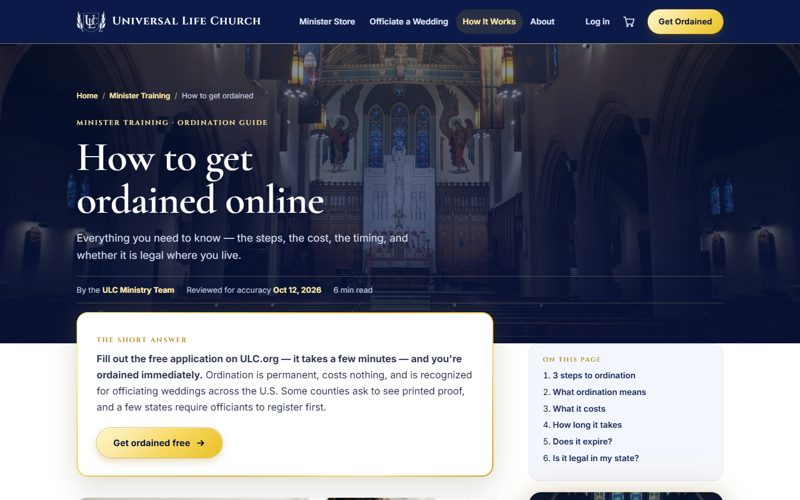
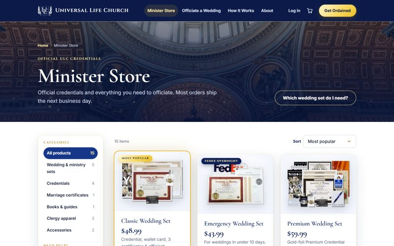
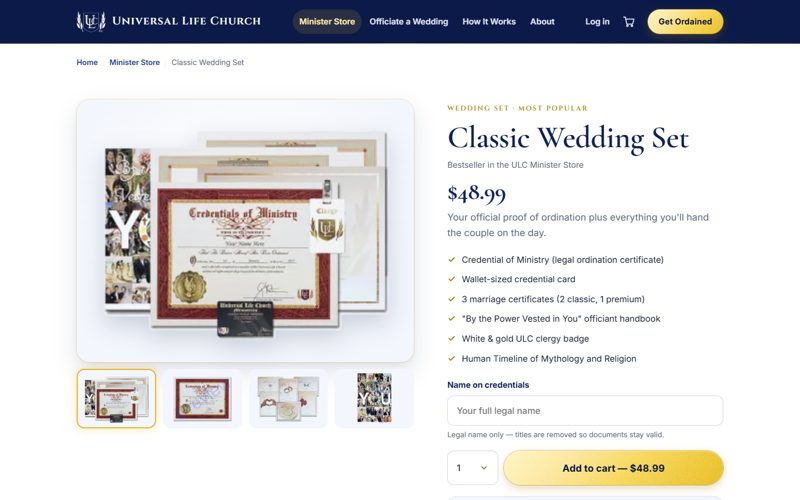
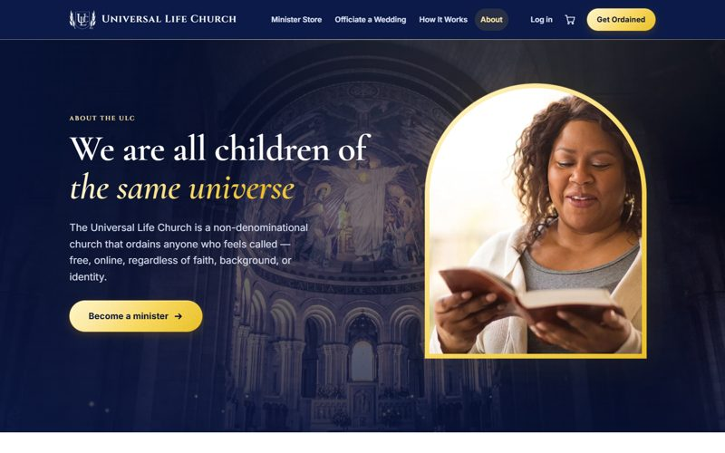

A review of what ULC.org needs to win more ordinations, and a modern, working redesign of the site's key pages.
The full audit and supporting files are kept in a restricted ULC Monastery Google Drive folder.
Every finding with evidence, the input from both SEO specialists, search-result rewrites and the reasoning behind the redesign.
The prioritized list of fixes: what to do this week, and what comes next over the following one to two months.
An eight-minute tour: the audit's key findings, the redesign in motion, and the to-do list.
A modern, church-inspired redesign. Move your cursor over the homepage hero to see the motion.

Homepage
Get Ordained (2 steps)
Welcome, new minister
Officiate a Wedding
State guide · Texas
How to Get Ordained
Minister Store
Product page
About the ULCThis is a prototype: forms don't submit anything, and some links are placeholders. Desktop browsers show the full motion; phones get a simplified version.